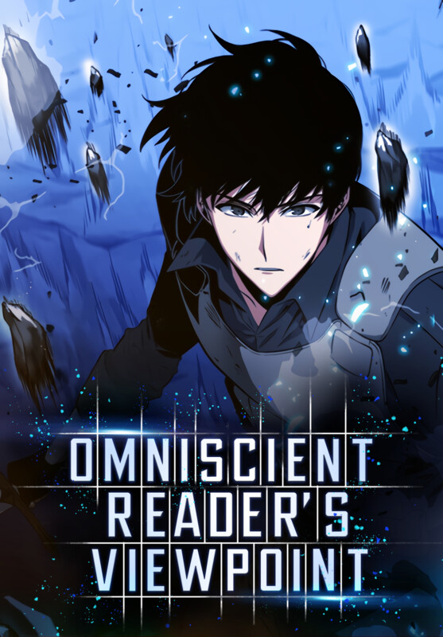

Top seller of this month
Special Offer
aaaaaaaaaaaaaaaaaaaaaaa
aaaaaaaaaaaaaaaaaaaaaaa
Kim Dokja is an office worker who read the novel "Three Ways to Survive in a Ruined World". The world of the novel suddenly becomes reality, and Dokja becomes the only person who knows how the world will end. He attempts to change the course of the story by solving and conquering challenges, known as scenarios in the series, each being operated by a dokkaebi.
A story of a villain, Fang Yuan who was reborn 500 years into the past with the Spring Autumn Cicada he painstakingly refined. With his profound wisdom, battle and life experiences, he seeks to overcome his foes with skill and wit! Ruthless and amoral, he has no need to hold back as he pursues his ultimate goals. In a world of cruelty where one cultivates using Gu - magical creatures of the world - Fang Yuan must rise up above all with his own power